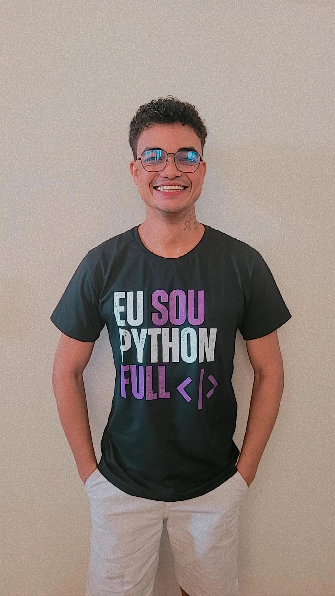
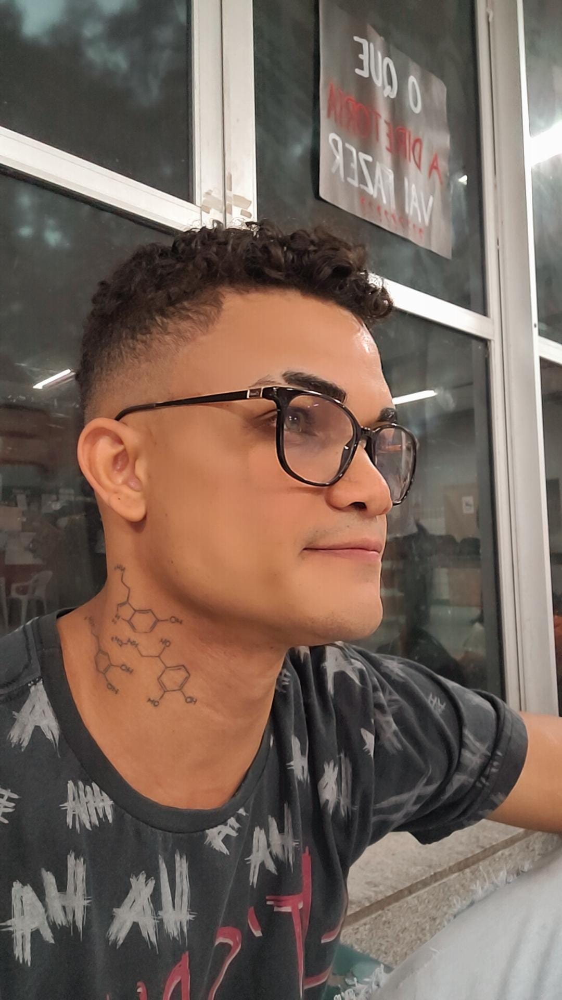

Perfil do Aluno |
|
|---|---|
Fotos de Perfil


|
|
Dados PessoaisNome Completo: Fernando Stanley da Silva RA: 323133626 Curso: Análise e Desenvolvimento de Sistemas Período Atual: 5º Período Endereço Completo: Av. Pastor Anselmo Silvestre, 1495 - Fernão Dias, Belo Horizonte - MG, 31170-678 E-mail: stanleyfernandoads@gmail.com CPF: 229.519.400-84 Atualizar CPFAtualizar E-mail |
Unidades Curriculares (UCs) já cursadas
Redes Sociais |
Perfil PessoalSou uma pessoa curiosa por natureza e apaixonada por aprendizado constante. No tempo livre, gosto de explorar o universo da música. Toco alguns instrumentos e estou sempre me desafiando a aprender algo novo nessa área. Também sou fã de uma boa dança, especialmente quando ela vem acompanhada de momentos descontraídos com amigos ou familiares. Leitura e filosofia completam meu repertório de interesses: gosto de mergulhar em reflexões sobre o comportamento humano, o sentido das coisas e as transformações do mundo. Acredito que o equilíbrio entre razão e sensibilidade é essencial tanto na vida pessoal quanto profissional. Por isso, estou sempre buscando unir disciplina e criatividade, lógica e empatia, foco e leveza. Perfil Profissional/AcadêmicoMinha jornada começou na Força Aérea Brasileira, onde servi por quatro anos. Lá, desenvolvi não só habilidades técnicas e operacionais, mas também valores que carrego comigo até hoje, como liderança, comunicação clara, pontualidade, organização e espírito de equipe. Inspirado pela minha família, que atua na área da saúde, iniciei minha carreira no setor farmacêutico. Foi um período de grande aprendizado, em que pude aprimorar minha atenção aos detalhes, o atendimento humanizado e a habilidade de trabalhar sob pressão com responsabilidade e agilidade. Mas foi a tecnologia que verdadeiramente acendeu minha vocação profissional. A possibilidade de criar soluções inovadoras para problemas reais me conquistou, e por isso iniciei o curso de Análise e Desenvolvimento de Sistemas. Atualmente, atuo como analista de implantação de sistemas, onde posso unir minha bagagem anterior com a visão tecnológica que venho construindo. Estou sempre em busca de novos desafios que me permitam crescer e contribuir com propósito. |
|
Projeto Perfil do Aluno - Fase 02 |
|